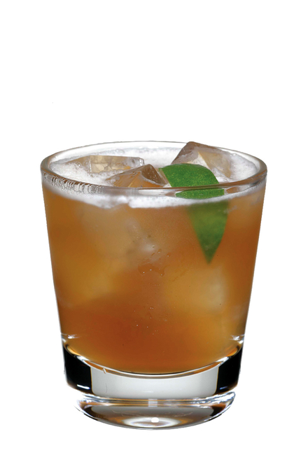

Grog

Grog is the most popular pirate beverage in the Tri-Island Area.
It is also one of the most caustic, volatile substances known to man.
Ingredients
- 1 (or more) kerosene
- 1 (or more) propylene glycol
- 1 (or more) artificial sweeteners
- 1 (or more) sulphuric acid
- 1 (or more) rum
- 1 (or more) acetone
- 1 (or more) red dye no.2
- 1 (or more) scumm
- 1 (or more) axle grease
- 1 (or more) battery acid
- (optional) pepperoni
Steps
- pour kerosene, axle grease and scumm in a mildly warm recipient
- once the grease and kerosene melt, stir until the ingredients mix
- slowly add propylene glycol and acetone
- in a separate bowl, mix sulphuric acid and battery acid with the artificial sweeteners
- slowly incorporate the sulphuric and battery acid with the rest of the preparation
- if nothing exploded, drink rum accordingly
- mix what's left of the rum with the red dye no.2 and add it to the mix
- stir until the mix cools down
- (optional) you can speed up the cooldown process by adding frozen slices of pepperoni
Go back!